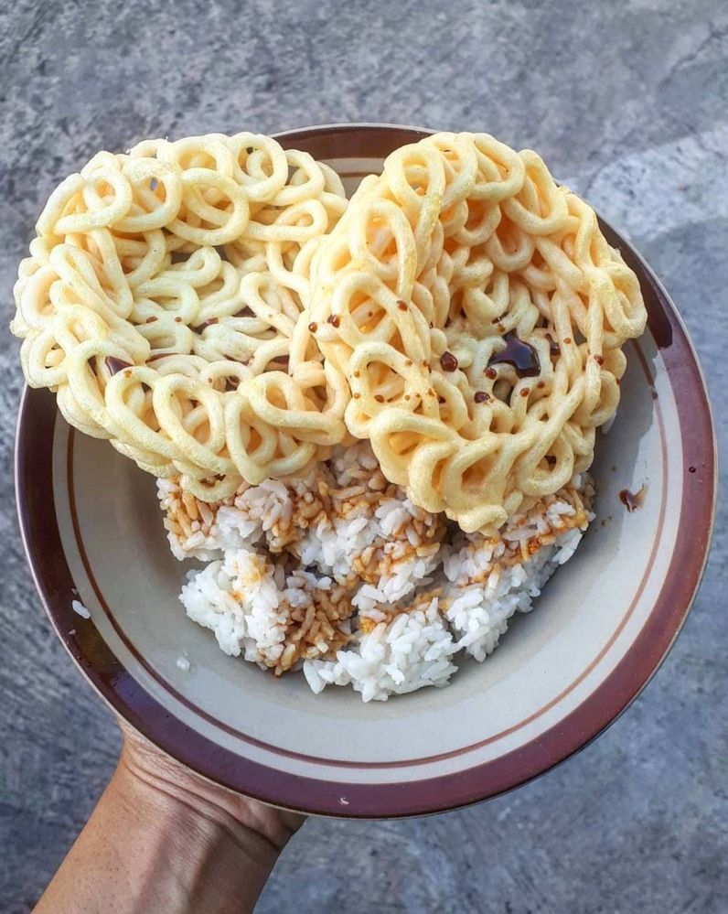

es soda gembira
es soda gembira + enak
13 rb
es teh
es teh + enak
5 rb

es jeruk
es jeruk + enak
10 rb
|
nasi goreng nasi + kerupuk 25 rb |
kikil padang kikil + kuah 200 rb |

nasi kerupuk nasi + kecap + kerupuk 5 rb |
|
es soda gembira es soda gembira + enak 13 rb |
es teh es teh + enak 5 rb |
es jeruk es jeruk + enak 10 rb |